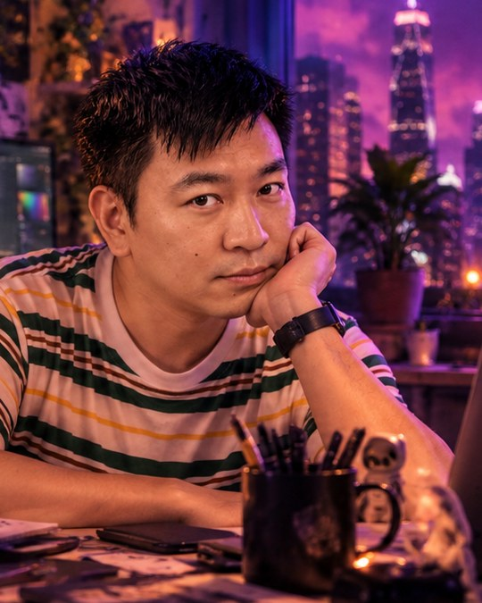

About
Switches this line between English and Chinese.

About me
I’m Cyril Cheung, a Hong Kong designer with 10+ years in visual design, digital content and moving image.
Every project starts with one question: what should people feel, notice or remember? Once the idea is clear, I shape it into visual design — campaigns, key visuals, social and e-commerce visuals that are easy to read at a glance.
AI and video are tools I use when they make the idea stronger: to explore directions faster, to create images that would otherwise be out of reach, and to bring still design to life.
- Based in
- Hong Kong
- Experience
- 10+ years
- Languages
- Cantonese (native) · Mandarin (conversational) · English (basic)
- Focus
- Visual design · Creative concepts · AI-assisted visuals · Moving image
How I work
Three steps, every time.
-
01
Find the idea
Before any layout, I look for the one thought the work has to carry — from the brief, the product and the people it’s for.
-
02
Design it clearly
Type, colour, image and layout working together, so the idea reads in a second — on a poster, a banner or a phone screen.
-
03
Use the right tool
Photoshop, Illustrator, a camera, AI image and video tools, Premiere Pro — chosen for the idea, not the other way round.
What I do